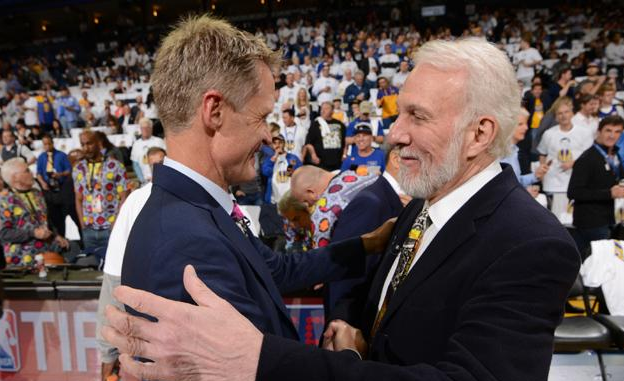

波波维奇：被横扫不影响我跟科尔的交情

北京时间6月18日，虽然马刺在西决中被勇士横扫，这并未影响波波维奇跟勇士主帅科尔的感情，他透露自己在近期跟科尔聊过。对于这位昔日的弟子，波波的口中只有好话。
近期在接受采访时，波波说：“我们爱他，他们横扫了我们，不过不会影响我们之间的交情。他跟（迈克-布朗）正在享受胜利，希望随着时间推移，史蒂夫的健康状况会越来越好，那是我最为关心的。他是个好人，应该获得健康。”
波波维奇执掌马刺20年，共获得5次NBA总冠军。科尔在他的手下曾获得2003年的NBA总冠军，两人交情很深，一直有密切的联系。